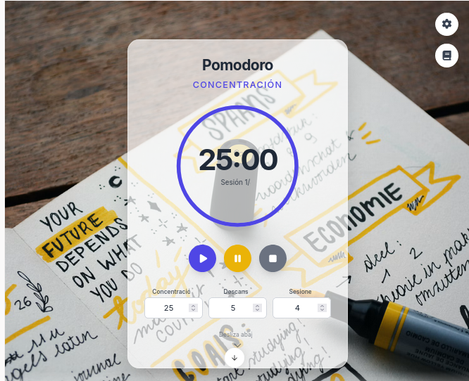

"Quiero que me desarrolles una app con html, css y javascript para realizar el método pomodoro con las siguientes características:"
- ■ Opción de modo oscuro y modo claro (en una rueda de ajustes).
- ■ Unas casillas que te dejen elegir el tiempo de concentración, el de descanso y el número de sesiones.
- ■ Un círculo que se va cerrando conforme pasa el tiempo, con el contador en el tiempo.
- ■ En la ruedita se puede poner el idioma entre español, inglés, francés y chino (por defecto español).
- ■ Habrá un modo de planificación deportiva de descansos que se puede activar o desactivar en los ajustes, por defecto desactivado (y esta meterá un ejercicio aleatorio en la pantalla principal entre sentadilla, flexiones, dominadas).
- ■ Tendrá una imagen de fondo, que podrá activarse o desactivarse en los ajustes.
- ■ Debajo de la pestaña de la rueda de ajustes habrá la imagen de una libreta que abrirá un calendario en el que podremos poner tareas y seleccionarlas como completadas.
- ■ Si scrolleas hacia abajo saldrá una explicación de en qué consiste el pomodoro y una guía de cómo usar la aplicación.
Resultado:
